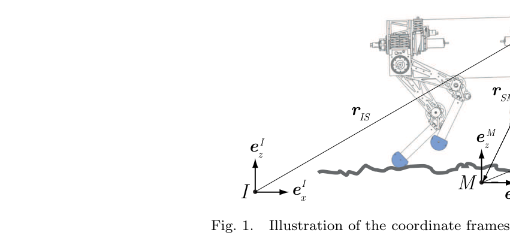
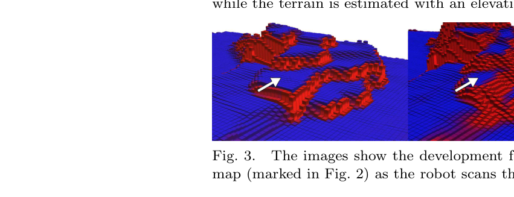
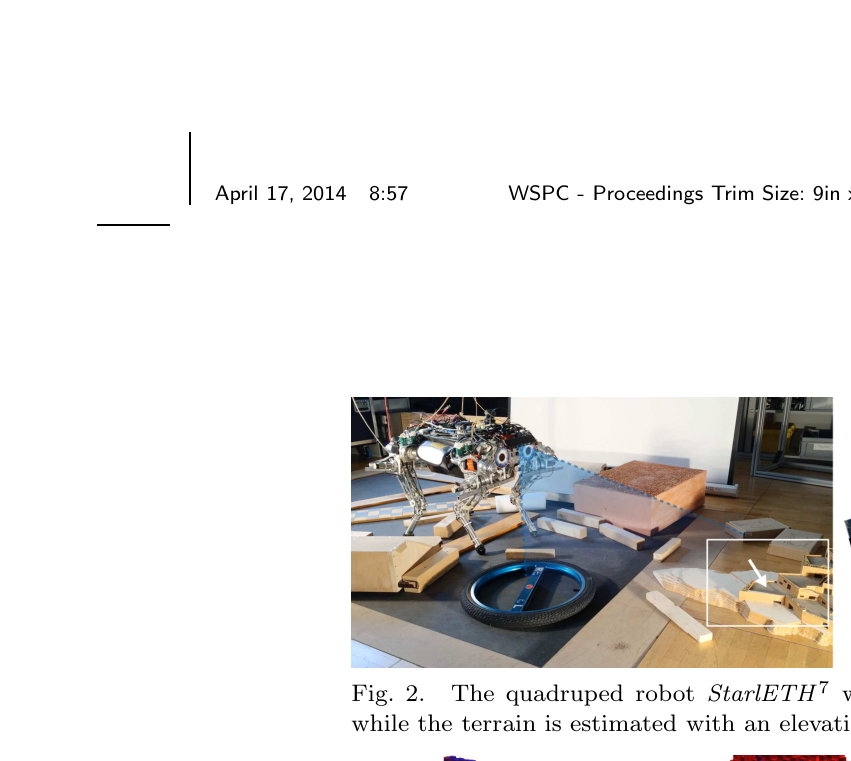

Robot-centric elevation mapping with uncertainty estimates
한줄 요약 — 전역 정합에 의존하지 않고 이동하는 로봇 좌표계에서 거리 측정의 높이 분산과 자세 드리프트의 x-y-height 불확실성을 분리 전파한 뒤 필요할 때만 주변 셀을 확률 융합하여, StarlETH가 장애물 위를 걸을 때 앞쪽은 선명하고 오래된 뒤쪽은 불확실성이 커지는 일관된 local elevation map을 만든다.
1.연구 배경 및 동기
전역 일관성보다 국소 행동에 필요한 불확실성 있는 지형
거친 지형을 걷는 로봇은 먼 전역지도보다 다음 몇 걸음의 접촉과 충돌을 결정할 고해상도 local elevation map이 필요하다. 이 지도는 onboard range sensor와 pose estimator를 결합하지만, 다족 상태추정에서 위치와 gravity 축 yaw는 관측 불가능해 시간이 갈수록 drift한다. 새 scan을 inertial frame에 계속 붙이면 pose 오차가 지도 구조의 모순으로 바뀐다.
기존 scan matching 기반 elevation map은 matching 뒤 남은 오차의 전파를 충분히 다루지 않았고, GPS 기반 확률 융합은 위성항법이 없는 다족 환경에 맞지 않았다. robot과 함께 움직이는 local map도 정확한 pose tracking을 가정했으며, 거리·각도에 따라 height variance를 선형 증가시키는 방식은 6D pose covariance와 수평 위치 불확실성의 공간적 효과를 직접 반영하지 못했다.

원문 Figure 1 · PDF p.5 — Fig. 1. Illustration of the coordinate frames used in the elevation mapping framework.
선행 연구의 한계
scan matching을 통한 composite elevation map은 matching 뒤 잔여 pose error가 map height에 어떻게 누적되는지 명시적으로 전파하지 않았다.
GPS absolute position에 의존하는 range fusion은 GPS가 없고 proprioceptive pose가 drift하는 다족 로봇에 적용하기 어렵다.
주행 거리·회전량에 비례해 height variance만 키우는 근사는 6D covariance와 in-plane uncertainty가 주변 셀에 미치는 효과를 놓친다.
측정 update와 motion-induced model update가 서로 다른 pose covariance 성분을 상보적으로 처리하도록 정식화했다.
horizontal variance와 지연 fusion을 도입하고, StarlETH에서 1 cm 지도를 20 Hz로 갱신해 장애물 형상과 불확실성 변화를 시연했다.
2.방법론 및 시스템 구성
좌표계는 환경에 고정된 inertial I, 거리센서에 고정된 sensor S, 로봇과 함께 움직이는 map M으로 나뉜다. M의 z축은 I의 z축과 항상 정렬하고 yaw는 S와 맞춘다. 새 3D range point를 M의 height p로 투영하고 sensor covariance와 sensor rotation covariance를 Jacobian으로 전파해 measurement variance를 얻은 뒤, 기존 셀의 height Gaussian과 Kalman update한다.
robot pose가 k-1에서 k로 변할 때 기존 지도 셀의 mean height는 유지하되, pose covariance 증가분을 각 셀의 σ_x², σ_y², σ_h²에 전파한다. planner가 지도를 요구하면 주변 셀이 관심 셀에 실제로 놓일 확률을 x-y Gaussian CDF로 계산해 weight로 사용하고, weighted population mean·variance로 최종 height와 uncertainty를 만든다.
처리 파이프라인
1
map frame 정의
map z축을 inertial gravity 축과 정렬하고 yaw를 sensor yaw에 맞춘다. 이 선택으로 measurement update에서는 sensor position과 yaw uncertainty를 제외하고, roll·pitch와 range noise가 height에 미치는 성분을 분리한다.
2
range point 높이화
sensor frame의 3D point를 C_SM과 r_SM으로 map frame에 옮긴 뒤 P=[0 0 1]로 height p를 추출한다. sensor noise model과 rotation covariance를 Jacobian으로 σ_p²에 전파한다.
3
셀 Kalman 융합
새 height Gaussian과 기존 셀 height Gaussian을 분산 역가중 형태로 결합한다. 서로 다른 height가 한 셀에 들어오는 vertical wall에서는 Mahalanobis rule로 최고 elevation을 융합하고 충분히 낮은 측정은 버린다.
4
robot motion model update
pose covariance의 시간 증가분을 각 map point 좌표의 Jacobian으로 변환해 σ_x², σ_y², σ_h²를 키운다. position covariance 전체와 yaw variance를 이 단계에서 반영하고 mean height는 바꾸지 않는다.
5
요청 시 map fusion
주변 셀이 관심 셀 안에 있을 Gaussian 확률을 weight로 삼아 height·variance를 합친다. planner는 필요한 submap의 height와 confidence를 foothold·collision 판단에 이용한다.
원문 수식과 의미
높이 측정 분산
\sigma_p^2=J_S\Sigma_SJ_S^T+J_q\Sigma_{P,q}J_q^T
거리센서 3D noise와 roll·pitch를 포함한 rotation uncertainty를 height variance로 전파한다.
수평 uncertainty 때문에 주변 셀이 관심 셀에 속할 확률 w_n으로 population mean과 variance를 결합한다.
3.핵심 기술
pose covariance 성분의 상보적 분리
map frame의 z축을 inertial frame과 맞추고 yaw를 sensor와 맞춘 좌표 선택이 계산을 단순화한다. measurement update에서는 sensor position과 yaw uncertainty가 projected height에 직접 들어가지 않고, range noise와 roll·pitch rotation uncertainty가 σ_p²를 만든다. 반대로 model update에서는 position covariance와 yaw variance의 증가가 기존 셀 위치 uncertainty로 전파된다.
6D pose covariance를 한 scalar height noise로 뭉개지 않음
position·yaw drift를 horizontal variance로 보존
roll·pitch는 새 measurement height uncertainty에 즉시 반영
셀별 3차원 uncertainty와 지연 fusion
각 셀에 height mean·variance뿐 아니라 σ_x²와 σ_y²를 저장하면 robot motion 때 주변 셀끼리 바로 섞지 않아도 된다. 고주파 measurement/model update는 셀별 독립 계산으로 유지하고, 전체 또는 submap이 필요할 때만 주변 probability를 사용해 fusion한다. 논문은 이 분할이 high update rate를 가능하게 하는 핵심이라고 설명한다.
data collection과 map fusion 계산 분리
planner 요청 submap만 융합 가능
flat region은 pose uncertainty 증가에도 비교적 낮은 height standard deviation 유지
vertical structure를 위한 보수적 동일 셀 규칙
2.5D cell에 vertical wall처럼 여러 height가 들어오면 단순 평균이 표면을 중간 높이로 왜곡한다. 저자들은 Mahalanobis distance 기반 규칙으로 highest elevation cluster를 융합하고 현 추정보다 충분히 낮은 측정을 버린다. 이는 단일 surface 가정 안에서 obstacle top을 보존하는 실용적 절충이다.
동일 cell의 서로 다른 height를 무조건 평균하지 않음
highest elevation을 우선 보존
완전한 multi-surface 표현은 아니며 아래 표면 정보는 손실

원문 Figure 3 · PDF p.8 — Fig. 3. The images show the development from left to right for a region of the height map (marked in Fig. 2) as the robot scans the terrain and than moves away from it.
4.실험 결과
실험 환경·장비·데이터
StarlETH 전면에 PrimeSense Carmine 1.09를 부착하고, drift 가능한 kinematic·inertial pose와 거리별 depth·lateral noise model을 사용했다.
시험장에는 높이 7~150 mm의 장애물을 놓고 사람이 walking gait를 수동 조종했다.
local map은 2.5×2.5 m, cell side 1 cm, measurement·model update 20 Hz로 설정하고 Intel Core i3 2.60 GHz에서 실행했다.
실험 프로토콜
로봇이 약 0.05 m/s로 obstacle field를 걸으며 앞쪽 terrain을 스캔하고 지나간 뒤, 같은 map region의 height와 standard deviation이 시간에 따라 어떻게 변하는지 관찰했다.
전체 map fusion time과 실제 지형 대비 height 보존·edge sharpness·hole을 정성 평가했으며, ground-truth RMSE 비교는 수행하지 않았다.
비교 기준
실제 obstacle 배치와 시간 순서 snapshot의 정성 비교
정량 baseline은 원문에서 보고되지 않음
평가 지표
obstacle height·walking speed
map 크기·해상도·update rate
전체 map fusion 시간
edge·hole·standard deviation의 정성 품질

원문 Figure 2 · PDF p.8 — Fig. 2. The quadruped robot StarlETH 7 walks over obstacles (manually controlled) while the terrain is estimated with an elevation map.
핵심 결과 해석
StarlETH가 7~150 mm 장애물 위를 약 0.05 m/s로 걸을 때 2.5×2.5 m, 1 cm 지도를 20 Hz로 갱신했다. 실제 배치와 비교해 obstacle height가 잘 보존됐고 고해상도·고주파 sensor 덕분에 hole이 매우 적었다. sensor가 계속 보는 로봇 앞쪽은 edge가 선명한 반면, 지나가서 뒤에 남은 영역은 pose uncertainty 증가에 따라 부드러워졌다.
Intel Core i3 2.60 GHz에서 전체 map fusion은 약 0.3 s가 걸렸다. 이는 20 Hz update와 같은 주기로 전체 지도를 매번 융합할 수 없다는 뜻이지만, 실제 planner는 보통 submap만 요구하므로 저자들의 지연 fusion 구조와 맞는다. data collection은 고주파로 유지하고 의사결정 직전에 필요한 영역만 계산하는 trade-off다.
정량 결과
평가 항목
정량 결과
조건·맥락
원문 근거
시험 장애물 높이
7~150 mm
StarlETH 수동 walking gait obstacle field
PDF p.8
로봇 주행 속도
약 0.05 m/s
장애물 위를 걸으며 local terrain mapping
PDF p.8
고도지도 구성
2.5×2.5 m, 1 cm cell, 20 Hz
measurement와 model estimate update
PDF p.8
전체 지도 융합 시간
약 0.3 s
Intel Core i3 2.60 GHz; 일반적으로 submap만 필요
PDF p.8
실패 사례와 경계조건
forward sensor FOV를 벗어난 뒤쪽 영역은 pose drift가 누적되어 edge가 smooth해지고 uncertainty가 커진다.
vertical wall처럼 한 셀에 여러 높이가 들어오면 highest elevation 중심 규칙이 낮은 표면을 버려 multi-surface 정보를 잃는다.
전체 2.5 m 지도를 매번 fusion하면 약 0.3 s가 필요해 20 Hz 전체 융합은 불가능하다.
전역 일관성을 목표로 하지 않으므로 장거리 loop closure나 공통 world map은 별도 방법이 필요하다.
5.한계 및 향후 연구
현재 한계
실험이 단일 StarlETH·PrimeSense 구성과 낮은 약 0.05 m/s 수동 보행에 한정됐다.
ground-truth elevation RMSE, uncertainty calibration, 다른 mapping baseline과의 수치 비교가 없다.
2.5D cell의 highest elevation 규칙은 overhang·vertical multi-surface·낮은 표면을 동시에 보존하지 못한다.
전체 map fusion 약 0.3 s는 큰 영역을 매번 요청할 때 병목이며, global consistency를 제공하지 않는다.
향후 연구
원문이 명시한 대로 다른 platform에서 더 자세한 평가와 기존 방법 비교를 수행한다.
submap fusion 영역을 planner uncertainty 요구에 맞게 선택해 계산량을 줄인다.
local map과 global SLAM feedback을 연결해 drift 처리와 장기 일관성을 함께 확보한다.
6.한마디로 정리
핵심 방법은?
range noise·roll/pitch uncertainty는 새 height에, position·yaw drift는 기존 셀의 x-y-height variance에 전파하고 필요할 때 주변 셀을 확률 융합한다.
핵심 결과는?
StarlETH에서 1 cm local map을 20 Hz로 갱신해 7~150 mm 장애물 형상을 보존했고 전체 fusion은 약 0.3 s였다.
한계는?
정량 정확도 비교가 없고 단일 2.5D surface·저속 한 플랫폼이며, 전체 지도 융합과 global consistency는 별도 과제로 남는다.
#측위·매핑#환경인식#로봇 중심 고도지도#셀별 확률 융합#자세 공분산 전파
나의 의견 / 우리 연구와의 연관성
굴착 작업에서는 장비와 버킷이 지형을 가리고, 차체 진동과 boom motion이 센서 pose uncertainty를 빠르게 바꾼다. 이 논문처럼 height estimate와 confidence를 함께 유지하면 planner가 오래된 셀을 확정 지형으로 오인하지 않고, 굴착 직전 재관측이나 보수적 접근을 선택할 수 있다.
고주파 raw update와 요청 시 fusion은 굴착 cycle의 작은 submap 계산에 맞는다. 지형이 바뀌면 작업 영역 셀을 invalidate하거나 높이 변화를 예측해야 한다.
bucket이 가린 셀은 마지막 관측값을 유지하되 pose·시간·작업 이벤트에 따라 variance를 증가시킬 수 있다.
dig command 뒤 예상 cut volume을 별도 layer로 표시하고 재관측 전까지 낮은 confidence로 계획할 수 있다.
bucket 주변 submap만 fusion하면 0.3 s 전체-map 비용을 줄일 수 있다.
7.전체 그림·표
본문 핵심 위치에 배치하지 않은 원문 Figure와 Table을 원문 페이지 순서로 수록한다.